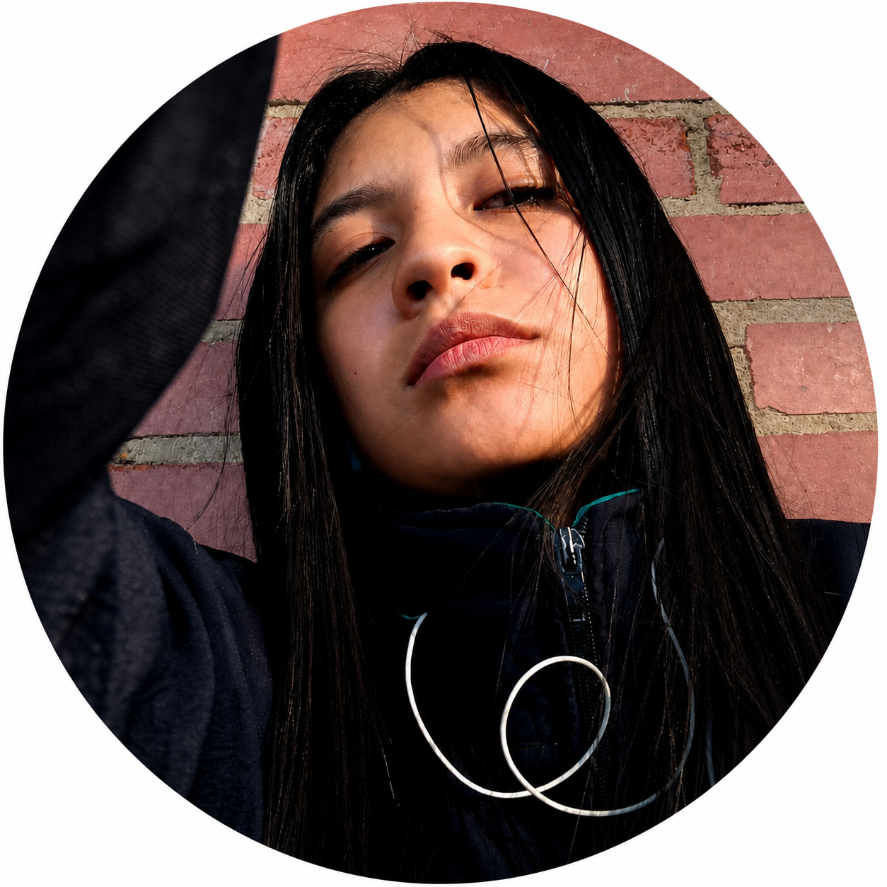
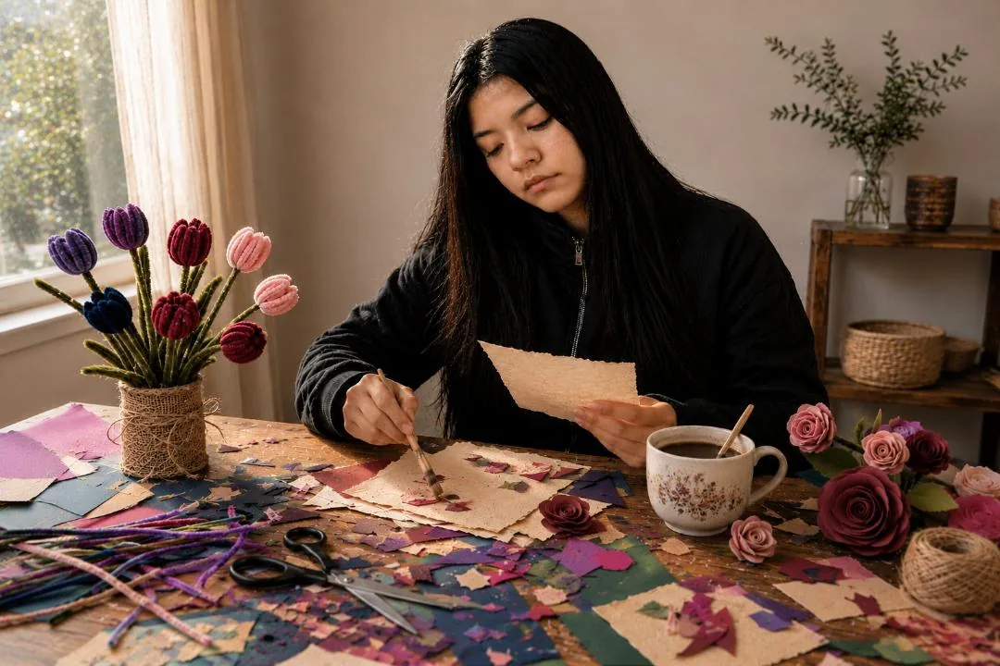
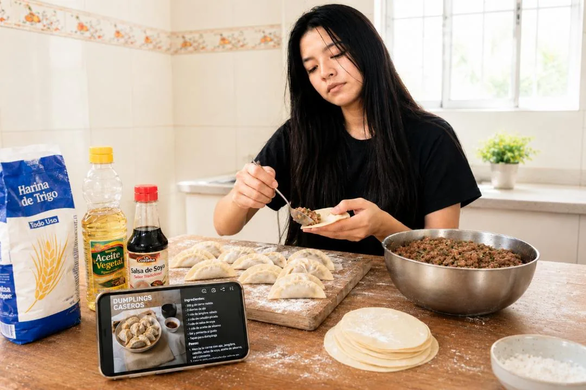
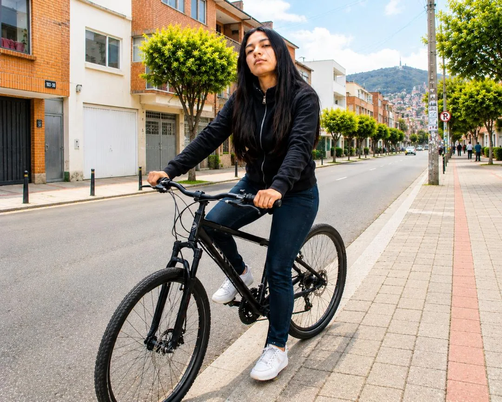
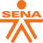

¿Cuánto cuesta
vivir como quiero?
Un análisis financiero profundo y un plan de acción estructurado con inteligencia artificial para diseñar, cotizar y proyectar la viabilidad de mi estilo de vida ideal a los 25 años.
Peña Urquiola Estefani Andreina
1102 J. M.
Estefani Peña
Estudiante Grado 11

Estefani Peña
Estudiante Grado 11



Mi proyecto de vida antes de morirme
Definiendo el verdadero significado de "vivir con libertad y plenitud" bajo mis propios términos a los 25 años de edad.
Filosofía del estilo de vida
Mi objetivo principal no está basado en la acumulación de lujos exagerados o apariencias materiales extravagantes, priorizo la tranquilidad, la libertad y las experiencias genuinas y me imagino viviendo de forma estable, segura e independiente.
Quiero tener el control sobre mi tiempo, residir de forma autónoma en mi propio espacio y disponer de la solvencia financiera para costear mis pasatiempos y conectarme profundamente con la naturaleza mediante viajes frecuentes.
"Tu objetivo no es tener una vida llena de lujos, sino una vida estable, con libertad para disfrutar la naturaleza, viajar y vivir con tranquilidad."
Ejes fundamentales del día a día
Vivienda Independiente
Vivir sola en un apartamento pequeño e independiente ubicado en el sur de Bogotá, estrato 3 o 4, priorizando seguridad y autonomía.
Movilidad Sostenible
Uso primordial de la bicicleta como medio de transporte ecológico y saludable, complementado ocasionalmente con transporte público.
Pasatiempos y Naturaleza
Salidas periódicas a entornos naturales, manualidades con materiales reciclados, probar nuevas recetas culinarias en casa y escuchar música de forma gratuita.
Ahorro con Propósito
Planificar fondos específicos desde joven para explorar los pintorescos pueblos de Colombia e iniciar un ahorro sistemático para realizar un gran viaje a Japón.
Costo de mi estilo de vida
Investigación meticulosa de los costos actuales reales en Bogotá, adaptada a mis preferencias y calculada junto a la inteligencia artificial.
| Categoría | Detalle y Concepto | Rango Estimado (COP) |
|---|---|---|
| Vivienda | Arriendo de apartamento independiente en el sur de Bogotá + servicios públicos de estrato 3 o 4. | $1.380.000 |
| Alimentación | Mercado en casa (cocinando) + comer fuera una vez por semana. | $600.000 - $850.000 |
| Transporte | Mantenimiento de bicicleta + pasajes ocasionales de TransMilenio. | $70.000 - $160.000 |
| Entretenimiento | Preparación de recetas, manualidades y salidas al aire libre / parques. | $200.000 - $450.000 |
| Aseo y Personales | Elementos de aseo personal, salud básica, imprevistos cotidianos. | $250.000 - $350.000 |
| Ahorro y Metas | Destinado a fondo de viajes (Japón/Colombia) y emergencias futuras. | $700.000 - $1.000.000 |
| Presupuesto Mensual Recomendado |
Total estimado
$3.200.000 - $4.200.000
|
|
Explicación de gastos clave
Vivienda segura en Bogotá
El alquiler es el rubro prioritario, un apartamento de estrato 3 o 4 ofrece la seguridad y el espacio ideal para vivir sola con autonomía.
Alimentación Inteligente
Cocinar en casa el 90% de las veces reduce el gasto de comida de manera exponencial, permitiendo alimentos frescos por un costo moderado.
Ahorro Obligatorio (20%+)
No es dinero sobrante; es un gasto fijo programado para financiar el sueño de viajar a Japón y recorrer los pueblos de Colombia.
Tip de planificación
Ajustar los porcentajes reales te permite ver cómo cambia tu vida según tus ingresos reales, dándote más libertad para viajar.
La Cifra Central: Mi Meta Salarial
Organización del presupuesto bajo la regla ideal 50/30/20, junto con el 10% para la previsión de inflación e imprevistos.
Ingreso mensual neto requerido
Este valor ha sido calculado para mantener el estilo de vida propuesto a mis 25 años, representa el equilibrio entre cubrir mis necesidades básicas (50%), dar espacio a mis deseos (30%) y asegurar mi ahorro y futuro (20%).
$2.550.000
Arriendo, alimentación en casa, servicios, aseo personal, pasajes.
$450.000
Salidas recreativas a parques, ingredientes de repostería, pasatiempos.
$1.020.000
Fondo estructurado de viajes (Japón, pueblos colombianos) y emergencias.
Simulador de regla 50/30/20 personalizable
Ajusta el salario neto proyectado para ver en tiempo real cómo se debe estructurar tu presupuesto utilizando la regla financiera ideal.
Mi Ruta de Empleo y Educación
Cómo alcanzar los ingresos requeridos a través del desarrollo de carreras con alta demanda y especializaciones estratégicas.
Medicina (Enfoque en Sala de Trauma)
Mi Opción Aspiracional PrincipalLa medicina de trauma representa un área de altísima intensidad, crucial en el sistema de salud para salvar vidas en situaciones críticas de emergencia; he seleccionado esta opción por mi profundo interés de servicio y capacidad para trabajar bajo presión.
¿Por qué se ajusta a mi proyecto?
Supera cómodamente mi presupuesto inicial ideal ($4.422.000), garantizando estabilidad económica a largo plazo y permitiendo un ahorro acelerado para mis proyectos personales (como viajar a Japón), a la vez que realizo una labor humanitaria fundamental.
Caminos Alternos y Complementarios
Enfermería Profesional
4-5 AñosExcelente demanda en unidades de cuidado crítico y urgencias médicas.
Atención Prehospitalaria
2-3 AñosCarrera tecnológica perfecta para integrarse directamente al servicio de ambulancias y trauma.
Para complementar mi formación: Inglés B2-C1 (indispensable para Japón), Excel avanzado, y manejo de software médico.
Formación Práctica Desde Hoy
Plan de acción inmediato para capacitarme de forma gratuita y ganar experiencia antes de terminar la educación secundaria.
Cruz Roja Colombiana
Involucrarme activamente en el Voluntariado Juvenil de Primeros Respondientes, una gran forma de obtener experiencia invaluable de campo en emergencias y servicios de trauma real.
- Primeros auxilios básicos
- Gestión del riesgo
- Trabajo comunitario

Servicio Nacional de Aprendizaje (SENA)
Cursos gratuitos con certificación oficial que puedo completar en mis tiempos libres desde el colegio.
- Atención integral al usuario en salud
- Primeros auxilios avanzados
- Humanización de los servicios médicos
Plan de acción estructurado (mis próximos pasos)
Culminar Colegio e Iniciar Cursos Cortos
Terminar grado 11 con excelente rendimiento, iniciar cursos virtuales cortos en el SENA y buscar la vinculación directa a voluntariados como el de la Cruz Roja.
Acceso Universitario y Experiencia Previa
Presentar las pruebas correspondientes de acceso a Medicina o iniciar el tecnólogo en Atención Prehospitalaria, mantener activa la práctica de primeros auxilios y perfeccionar el inglés.
Graduación, Empleo y Consolidación del Ahorro
Ingresar formalmente al mercado laboral de la salud, habilitar una cuenta de ahorro programado con el 20% del salario neto y planificar el soñado viaje a Japón.
Consultas Realizadas a la IA
Capturas reales organizadas por fase, con la pregunta correspondiente al lado y versiones optimizadas para que la página cargue mejor.
Reflexión Personal Final
Análisis argumentado sobre las finanzas personales, decisiones tempranas y el uso responsable de la inteligencia artificial.
¿El estilo de vida que deseo es económicamente viable?
Sí, creo que es viable porque no estoy imaginando una vida llena de lujos, sino una vida tranquila, estable y con espacio para disfrutar lo que realmente me gusta; al poner cada gasto en números entendí que mi meta no depende de ganar una fortuna, sino de prepararme bien, elegir una profesión con futuro y aprender a administrar mi dinero desde ahora.
¿Qué decisiones debo tomar desde ahora para lograr mis metas?
Desde ahora debo tomar decisiones pequeñas pero constantes, terminar el colegio con buen rendimiento, buscar opciones reales para estudiar en el área de la salud, aprender primeros auxilios y acercarme a espacios de voluntariado; también necesito cuidar mis hábitos financieros, porque ahorrar y organizarme desde joven me puede acercar mucho más rápido a la vida que quiero.
¿Qué aprendí sobre el manejo de las finanzas personales?
Aprendí que manejar bien el dinero no empieza cuando uno ya gana mucho, empieza cuando uno se toma en serio sus decisiones; hacer un presupuesto me ayudó a ver que cada gasto tiene un peso y que el ahorro no debería ser lo que sobra, sino una parte fija de mi plan de vida.
¿Cómo puede ayudarme la IA en la planificación de mi futuro?
La IA me ayudó a ordenar ideas que al principio estaban muy sueltas, como cuánto podría costar vivir sola, qué gastos debía tener en cuenta y qué caminos profesionales podían acercarme a ese presupuesto; no reemplaza mi criterio, pero sí funciona como una herramienta útil para preguntar mejor, comparar opciones y tomar decisiones más informadas.